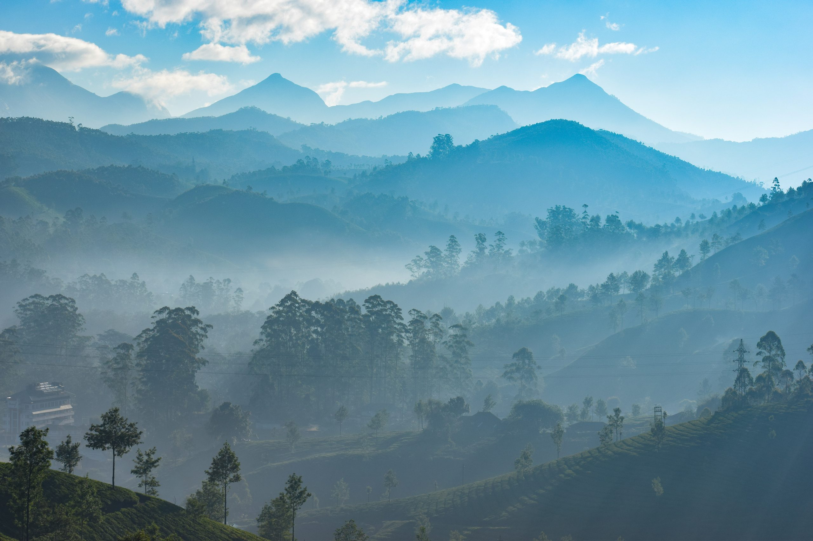

TOP DESTINATIONS
-

Kottakkunnu
Situated near the district collectorate in Malappuram, Kottakkunnu, is a recently developed tourist spot in the district. Kottakkunnu derives its name from an old fort, which was built by the Zamorins of Kozhikode (in Malayalam kotta means fort and kunnu means hill). One can still find here traces of this fort. The Municipality of Malappuram City has started Kottakkunnu Amusement park - a water theme park in the valley of Kottakunnu. Visitors are allowed up to 9 p.m. Nearby Kottakkunnu is the famous Vettakkorumakan temple and the Siva temple with several murals of Malabar.
-
Nilambur
Nilambur, most popularly known as the land of teak plantations, is a famous town in Malappuram district. The place is noted for its vast expanse of forest along with its varied wildlife habitats, rivers and waterfalls. It is situated close to the Nilgiri range of the Western Ghats on the banks of the Chaliyar River. Considered to be the oldest in the world, the teak plantation here obtained its name after H.V. Conolly, the Malabar district collector during the British rule. He was instrumental in planting teak in the entire Nilambur area. Chathu Menon, a forest officer under Conolly, organised the hectic task of planting the saplings. Chathu Menon was laid to rest in the teak garden in Conolly's Plot. The teak plantation in Nilambur is situated about four kilometres from the town, on the Nilambur - Gudallur road. A well-equipped teak museum is another attraction of Nilambur. This museum is a sub-centre of the Kerala Forest Research Institute. Arranged in the two-storeyed building are exhibits, articles and details of historic, aesthetic and scientific value, which give information on all aspects of the teak to visitors.
-
Bharathapuzha
The freely flowing waves of the river Bharathapuzha, popularly known as Nila, has much to do with the history and cultural traditions of Kerala. The river flows down from the Anamalai hills in the Western Ghats and meanders through three districts, namely, Malappuram, Palakkad, and Thrissur, before finally emptying itself into the Arabian Sea at the village of Ponnani.
-

Kodikuthimala
Better known as the Ooty of Malappuram, Kodikuthimala is a popular hill destination located 11 km from Perinthalmanna in Malappuram district. The phrase kodikuthi roughly means flag -fixing. It is believed that during a land survey at the time of British rule, a flag was hoisted at this hilltop and hence the place obtained this name. The hill stands at a height of 1500 ft above sea level.
-
Kozhippara Waterfalls
Set in the lush green surroundings, Kozhippara waterfalls is situated on the Kozhikode - Malappuram border. This waterfall is the best choice for adventure tourists. The spot is idel for swimming and trekking. One of the less explored tourist destinations, Kozhippara falls is on the Kuthradampuzha River.